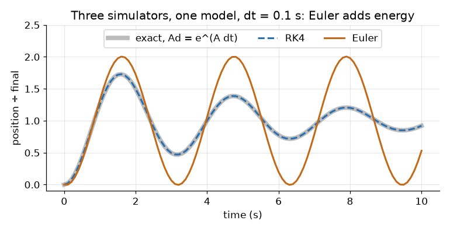
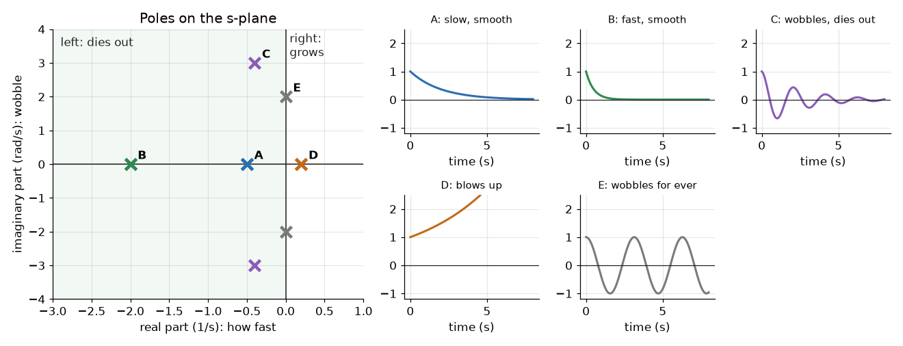
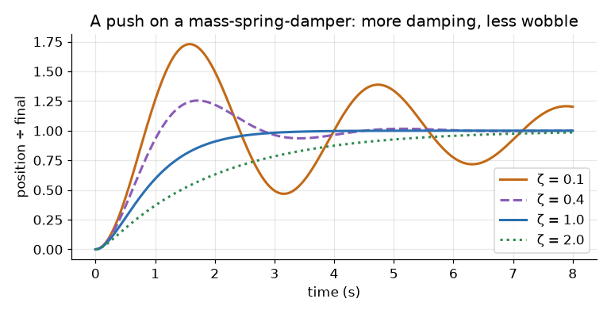
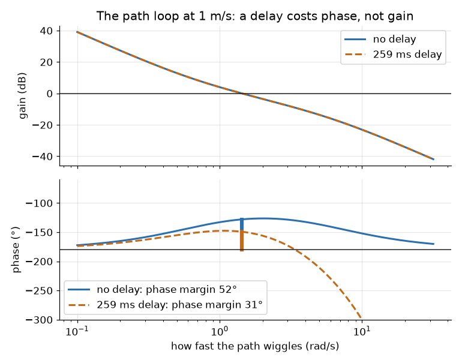
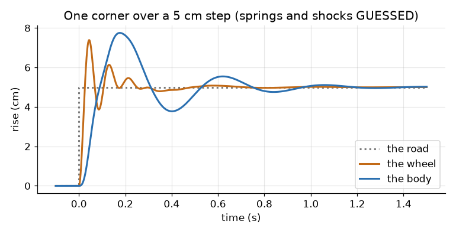
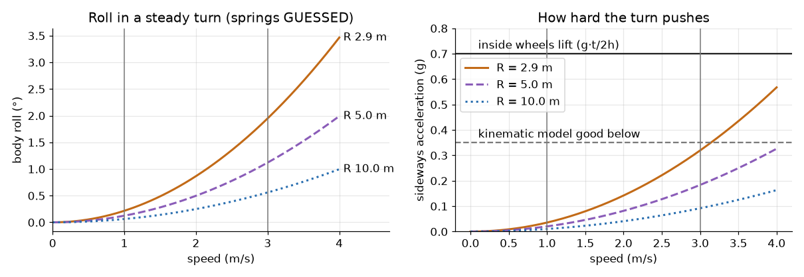

Ben, 25 Oct: "walk me through the whole process again ... What does all of this mean in terms of a car that we are going to drive?" This page is the SYSC 3600 refresher, one step at a time, with our car in every step. Our own numbers live in The car as a linear model; this page explains where they come from.
The short version
- The process: draw the parts → write Newton → pick the states → matrices A, B, C, D → step them forward in time (a simulator) → or Laplace them (transfer functions, poles, Bode).
- Poles = the roots of G(s)'s bottom line = the eigenvalues of A. Same numbers, three names. Where they sit says how the car behaves.
- Phase is "how late". A delay adds lateness without changing size; too late, and the car weaves.
- Shocks and roll: at our 1 m/s they barely matter (0.2° of roll). At 3 m/s on full lock: 2° of roll and 46 % of the weight moves to the outside wheels. Not a control problem; worth knowing for the lidar.
- Run it:
pixi run state-space-demoprints every number here and draws every figure.
The process, on one picture
1 WHY 2 DRAW 3 NEWTON 4 STATES 5 SIMULATE
question ─► free-body ─► m x'' + c x' + k x = F ─► x' = A x + B u ─► x[k+1] = Ad x[k] + Bd u
│
▼ Laplace
6 TRANSFER FUNCTION G(s) = C (sI − A)⁻¹ B + D
│
┌───────────────────────────────┼───────────────────────┐
▼ ▼ ▼
7 POLES: where it 8 BODE: how it follows 9 THE CAR: settling,
sits on the s-plane a wiggle; margins overshoot, delay1. Why bother: what we actually get
A model is the car on paper. Ask it a question before the car can get hurt.
| Question about the car | Tool that answers it | Our answer today |
|---|---|---|
| How long until it reaches the set speed? | step response (section 5) | about 13 s with the spine's PI |
| Will it pass the set speed? | the poles' damping ζ (7) | by 15 % on a sudden step |
| Can we tune the PI without driving? | pole placement (7, vehicle-model) | yes: pick ζ and ωn, solve for kp, ki |
| How much camera and network delay is safe? | phase margin (8) | 0.55 s more than today's, at 1 m/s |
| Does Gazebo behave like the car? | the same step in both, against the model | Gazebo steers 0.11 s late |
| Is 3 m/s safe on the path? | margins at each speed (8) | worst-case delay: 27°, under the 30° rule |
| Does body roll matter? | a roll model (10) | not for control; 2° at 3 m/s, full lock |
| What goes in the report? | all of it: equations, poles, plots | this page and vehicle-model |
2. Draw the model: free-body diagrams
Draw each part as masses, springs and dampers, with every force on it.
The textbook one: a mass, a spring, a damper (a shock)
┌─────┐ ──► x (up from rest)
F ──► │ m │
└──┬──┘
┌───┴───┐
k ⌇ ┤├ c spring pushes back: −k x
└───┬───┘ shock pushes back: −c x'
▀▀▀▀▀▀▀▀▀ groundThis is one corner of a car: the body (m) on its spring (k) and shock absorber (c).
The car's speed
drag: −d·m·v
◄──────────┐
┌────────────┴──┐
│ the car, m │ ──► v
└──┬────────┬───┘
○ ○ ──► motor force: m·a_max·u_a (u_a = throttle 0..1)The steering
command ─► Jrk G2 ─► motor (turns at up to 0.8 rad/s) ─► linkage (a lag, 0.1 s) ─► wheel angle δNo mass to draw here: we model it by what it does (two lags), not by its parts.
3. Write the differential equations
Newton: the sum of forces = mass × acceleration. One equation per part.
| Part | Equation |
|---|---|
| mass-spring-damper | m x'' = F − k x − c x' |
| the throttle | τt u_a' = u − u_a |
| the car's speed | v' = a_max u_a − d v |
| the steering (one lag) | τs δ' = δcmd − δ |
| the path (the bicycle) | y' = v sin θ, θ' = v tan δ / L |
4. Pick the states, write the matrices
A state is an energy store: a position (a spring's energy) and a velocity (a mass's energy). Know the states now and the inputs from now on, and you know the future.
The form is always the same:
x' = A x + B u how the states change
y = C x + D u what you measureThe mass-spring-damper, step by step
| Step | What |
|---|---|
| 1. States | x₁ = x (position), x₂ = x' (velocity) |
| 2. First row | x₁' = x₂ (by definition) |
| 3. Second row | x₂' = x'' = (F − k x₁ − c x₂)/m (Newton) |
| 4. Read off A, B | the numbers in front of x₁, x₂ and F |
[x₁'] [ 0 1 ] [x₁] [ 0 ]
[x₂'] = [ −k/m −c/m] [x₂] + [1/m ] F y = [1 0] xThe car's speed: two states, then three with the PI
x = [v, u_a] A = [ −d a_max ] B = [ 0 ]
[ 0 −1/τt ] [ 1/τt ]The spine's PI adds one more state: the integral of the error, z' = v_set − v. Put u = kp(v_set − v) + ki z into the equations, and the closed loop is still x' = Ax + Bu:
x = [v, u_a, z] A = [ −d a_max 0 ] B = [ 0 ] u = v_set
[ −kp/τt −1/τt ki/τt ] [ kp/τt ]
[ −1 0 0 ] [ 1 ]The bicycle: nonlinear, so linearise
The path model has sin and tan in it: x' = f(x, u), not A x + B u.
x = [y, θ, δ] f(x, u) = [ v sin θ, v tan δ / L, (δcmd − δ)/τs ]Linearise: pick an operating point, and keep the first slope of f there. The slopes are the Jacobian:
A = ∂f/∂x, B = ∂f/∂u at the operating point"About driving straight" means the operating point y = θ = δ = 0: then sin θ ≈ θ and tan δ ≈ δ, and
[ 0 v 0 ] [ 0 ]
A = [ 0 0 v/L ] B = [ 0 ] at 1 m/s: A = [[0, 1, 0], [0, 0, 0.637], [0, 0, −6.15]]
[ 0 0 −1/τs ] [ 1/τs ]Good while the angles stay small (a lane change, gentle curves). The demo gets the same A from finite differences, and the tests check it.
5. Simulate: step the state forward
A simulator is a loop: from the state now, work out x', take a small step dt, repeat.
| Method | One step | Error | Note |
|---|---|---|---|
| Euler | x[k+1] = x[k] + dt (A x[k] + B u) |
∝ dt | simplest; drifts |
| RK4 | four slopes in the step, averaged | ∝ dt⁴ | what most simulators use for f(x, u) |
| Exact | x[k+1] = Ad x[k] + Bd u, Ad = e^(A dt) |
none, if u is held | linear models only |

Why Euler wobbles for ever here: each method maps a pole p to a number per step. Exact: e^(p dt). Euler: 1 + p dt. For p = −0.2 ± 2j and dt = 0.1, |1 + p dt| = 1.000: Euler's version never dies out, though the real one does (|e^(p dt)| = 0.980). Smaller dt fixes it: 10 times smaller dt, 10 times less error.
| dt | Euler's worst error | RK4's |
|---|---|---|
| 0.1 s | 0.21 | 0.00001 |
| 0.01 s | 0.0097 | 10⁻⁹ |
The exact form is the matrix version of SYSC 3600's convolution: the response is e^(At) x(0) plus the input convolved with e^(At) B. The spine runs its PI every 10 ms, the path controller every 50 ms: the same Ad, Bd (vehicle-model, section 5).
Gazebo is the same idea, with more states
| Our model | Gazebo | |
|---|---|---|
| Bodies | none: just v, δ, the errors | 7 rigid bodies: the chassis, 4 wheels, 2 steering links |
| States | 2 to 4 | each body's position, angle and their speeds: 12 numbers each, held together by joints |
| Forces | linear lags and drag | contacts, friction, the motors' torques |
| Step | 10 or 50 ms | 1 ms (max_step_size in our worlds) |
| Suspension | none | none either: the wheels are fixed to the body |
Same loop: state now, forces, step. So Gazebo's car can't roll on springs: if roll ever matters, Gazebo won't show it.
6. Transfer functions
Laplace turns a derivative into s. With zero starting values, x' → s X(s), so differential equations become algebra.
x' = A x + B u → s X = A X + B U → X = (sI − A)⁻¹ B U
G(s) = Y(s)/U(s) = C (sI − A)⁻¹ B + DThe transfer function is the output over the input, in s. It holds the same information as A, B, C, D (for what you can see from the input and output).
The mass-spring-damper, worked
sI − A = [ s −1 ] det(sI − A) = s² + (c/m) s + k/m
[ k/m s + c/m]
G(s) = [1 0] (sI − A)⁻¹ [0; 1/m] = 1 / (m s² + c s + k)The two shapes you'll see everywhere
| Shape | G(s) | Step response | Ours |
|---|---|---|---|
| first order | K / (τs + 1) | 63 % by τ, done by 4τ, no overshoot | the car alone: K = 15 m/s, τ = 10 s |
| second order | ωn² / (s² + 2ζωn s + ωn²) | rises, may overshoot, settles | the steering: ωn 12.6 rad/s, ζ 1.03 |
Block diagrams and closing the loop
r ─►(+)─ e ─► C(s) ─► G(s) ─┬─► y series: multiply. C·G
▲ − │
└───────────────────────┘ closed loop: T(s) = C G / (1 + C G)For the speed loop, C(s) = kp + ki/s (the spine's PI) and G(s) = the throttle and the car. The closed loop's bottom line, 1 + C G = 0, is the characteristic equation: its roots are the poles of the loop.
7. Poles
Ben's half-memory: "the poles were the transfer functions or something". Close: the poles are the roots of the transfer function's denominator. And they are the same numbers as the eigenvalues of A:
G(s) = C (sI − A)⁻¹ B + D, and (sI − A)⁻¹ = adj(sI − A) / det(sI − A)
so G's bottom line is det(sI − A), and det(sI − A) = 0 is exactly what eigenvalues solve.The demo checks all three ways agree: eig(A), the roots of G's denominator, and by hand.
What a pole's place means

| Where | Means | Car |
|---|---|---|
| left half (Re < 0) | dies out: stable | every one of our closed loops |
| right half (Re > 0) | grows: unstable | a loop with too much delay |
| on the imaginary axis | wobbles for ever | the edge |
| far left | fast | the throttle (−9.5): 30 times faster than the car |
| near the origin | slow | the speed loop (−0.28): seconds |
| imaginary part | wobble, rad/s | the pair at −0.28 ± 0.28j: a little overshoot |
| at 0 exactly | an integrator: holds what it's given | the bicycle's heading and side error |
A pair −σ ± jωd gives ωn = √(σ² + ωd²) and ζ = σ/ωn. Then the textbook numbers:
| Number | Formula |
|---|---|
| overshoot | e^(−ζπ/√(1−ζ²)) |
| settling (2 %) | ≈ 4/(ζωn) = 4/σ |
| ζ < 1, = 1, > 1 | wobbles, just doesn't, sluggish |

Our car's poles:
| Loop | Poles | Means |
|---|---|---|
| speed, with the spine's PI | −0.28 ± 0.28j, −9.5 | ζ 0.71: settles in 13 s, 15 % overshoot (the PI's zero adds some) |
| steering | −10 (the linkage) and −16 (the motor): ζ 1.03 | no overshoot; done in 0.5 s |
| the path, alone | 0, 0, −6.15 | two integrators: nothing pulls the car back |
| the path, with pure pursuit, 1 m/s | −0.76 ± 0.78j, −4.6 | ζ 0.70: a 1 m offset is gone in 5.7 s |
The step responses: vehicle-model's figure. The poles on one map: vehicle-model's pole map.


Placing poles is tuning on paper: choose where they go, then solve for the gains
(place_speed_gains in vehicle-model).
8. Frequency response and phase
A Bode plot answers: if the input wiggles at ω, how big and how late is the output?
In car terms: drive a slalom, steering left-right faster and faster.
| Wiggle | What the car does | On the Bode plot |
|---|---|---|
| slow | follows fully, on time | gain high, phase small |
| faster | follows less, and later | gain falls, phase lags |
| very fast | hardly moves; far behind | gain tiny, phase −180° or worse |
Phase is the lateness, as an angle of one wiggle: 90° late = a quarter-wiggle behind.
Why a delay is special
A delay e^(−sT) has gain 1 at every frequency (it changes nothing's size), but phase −ωT: the faster the wiggle, the more of it the delay eats.

The two gain lines lie on top of each other. The phase line drops.
Margins: how much worse before it wobbles
Break the loop and look at C·G alone (the open loop):
| Margin | Read it | Means |
|---|---|---|
| phase margin | at the frequency where the gain is 1 (0 dB): how far the phase is above −180° | extra lateness it can take |
| gain margin | at the frequency where the phase is −180°: how far the gain is under 1 | how much harder it could steer |
| delay it can take | phase margin ÷ crossover frequency | seconds |
Rule of thumb: ζ ≈ phase margin / 100. 45° → about 20 % overshoot; under 30°, it swings.
Ours, the path loop (vehicle-model, section 4):
| 1 m/s | 3 m/s | |
|---|---|---|
| no delay | 52° | 50° |
| typical, 84 ms | 45° | 43° |
| worst, 259 ms | 31° | 27°: below 30° |
| Gazebo (+0.11 s steering) | 37° | 34° |
| extra delay it could still take | 0.55 s | 0.46 s |
9. What it means for the car we drive
| The number | Our car | What you'd see from the seat |
|---|---|---|
| settling time, speed | 13 s (2 %) | ask for 1 m/s: near it in 3 s, exactly on it after 13 |
| overshoot, speed | 15 % on a step | asks 1.0, briefly does 1.15. The spine's ramp hides most of it |
| damping, path | ζ 0.70 | 1 m off the lane line: back in 5.7 s (5.7 m at 1 m/s), swings 4.5 cm past |
| phase margin, path | 45° at 1 m/s | room for 0.55 s more camera, network or Orin delay before it weaves |
| gain margin, path | 18.5 dB | pure pursuit could steer 8 times harder before it oscillates |
| crossover | 1.4 rad/s | it follows path wiggles slower than one every 4.4 s |
| a pole at 0 | the bicycle alone | no controller, no recovery: it drifts |
1 m/s against 3 m/s
| 1 m/s (ego's cap today) | 3 m/s (the spine's cap) | |
|---|---|---|
| 1 m offset gone in | 5.7 s, 5.7 m | 5.0 s, 15 m |
| phase margin, worst delays | 31° | 27°: it would swing past the path |
| roll on full lock | 0.2° | 2.0° |
| weight to the outside wheels, full lock | 5 % | 46 % |
So: keep 1 m/s until the Orin's real delays are measured; before 3 m/s, cut the worst-case delay or lengthen the lookahead.
10. Shocks and roll

The quarter-car: one corner, 2 masses, 4 states
┌─────────┐ z_s the body's share (m_s ≈ 33 kg)
└────┬────┘
k_s ⌇ ┤├ c_s spring and shock
┌────┴────┐ z_u the wheel (m_u ≈ 12 kg)
└────┬────┘
k_t ⌇ the tyre, as a stiff spring
▀▀▀▀▀▀▀▀▀▀▀▀▀ z_r the roadx = [z_s, z_s', z_u, z_u']
m_s z_s'' = −k_s (z_s − z_u) − c_s (z_s' − z_u') − m_s g
m_u z_u'' = k_s (z_s − z_u) + c_s (z_s' − z_u') − k_t (z_u − z_r) − m_u g| Result (springs GUESSED) | Value |
|---|---|
| the body bounces at | 2.4 Hz, ζ 0.25 |
| the wheel hops at | 11.8 Hz |
| sag when parked: m_s g / k_s | 4.1 cm (the test checks the model gives this) |
For the car: bumps spaced 1.25 m apart, at 3 m/s, hit the body's 2.4 Hz: the worst ride. It shakes the cameras, not the steering.
Roll in a turn
A turn of radius R at speed v pushes sideways with a_y = v²/R (= v²κ). The body leans on its springs:
I φ'' + c φ' + (K_φ − m_s g h') φ = m_s h' a_y (a second-order system again)
steady: φ = m_s h' a_y / (K_φ − m_s g h')
K_φ = k_s · track² (four springs: the roll stiffness)
h' = CG height − roll-centre height
weight that moves to the outside wheels: ΔF = m a_y h / track
the inside wheels lift when: a_y > g · track / (2h)
| Number | Value | Source |
|---|---|---|
| mass | 181 kg | vehicle.yaml (Ben's estimate) |
| track | 0.77 m | vehicle.yaml (TODO confirm) |
| CG height h | 0.55 m | vehicle.yaml: GUESS |
| tightest turn | 2.87 m | wheelbase / tan(0.5 rad) |
| spring rate, per corner | 8000 N/m | GUESS (demo) |
| roll centre height | 0.20 m | GUESS (demo) |
| shocks' damping | ζ 0.3 | GUESS (demo) |
| v | R | a_y | Roll | Weight moved out (of one side's) |
|---|---|---|---|---|
| 1 m/s | 2.87 m (full lock) | 0.04 g | 0.22° | 45 N (5 %) |
| 1 m/s | 5 m | 0.02 g | 0.12° | 26 N (3 %) |
| 2 m/s | 2.87 m | 0.14 g | 0.87° | 180 N (20 %) |
| 3 m/s | 2.87 m | 0.32 g | 1.95° | 405 N (46 %) |
| 3 m/s | 5 m | 0.18 g | 1.12° | 233 N (26 %) |
| 3 m/s | 10 m | 0.09 g | 0.56° | 116 N (13 %) |
Rollover limit: g·0.77/(2·0.55) = 0.70 g, the same as the tyres' grip guess (0.7 g). Our worst case, 3 m/s on full lock, is 0.32 g: under half of it. (The share of weight that moves out is a_y ÷ that limit: at the limit, the inside wheels carry nothing.)
Does it matter? The verdict
| Effect | At 1 m/s | At 3 m/s, full lock | Matters? |
|---|---|---|---|
| roll, for steering | 0.2° | 2° | no: the path loop never sees it |
| rollover | 5 % of the limit | 46 % | no, with margin; check again for a higher CG (a roof load) |
| load on the inside wheels | −5 % | −46 % | a little: less grip inside; an open differential spins that wheel sooner |
| lidar tilt (1.8 m up) | 0.2° | 2°: on the outside of the turn the beams point 2° lower, 0.7 m at 20 m | it would, but ego's 2 m/s² limit holds the roll to 1.33°, under the 1.46° where the road shows within 12 m: safe to 4 m/s (Costmaps) |
| cameras (1.55 m up) | 5 mm sideways | 5 cm sideways | small; lane geometry may need the IMU's roll |
| bumps | the body at 2.4 Hz | the same | ride and camera shake, not control |
When it would matter: faster (roll grows with v²), tighter turns, a higher CG, softer springs, or anything that needs the sensors level. Careful with the IMU's roll: in a turn its accelerometer feels the sideways push as tilt (2 m/s² reads as 11.5°, against 1.3° of real roll), so take out speed × turn rate before levelling anything with it.
Kinematic or dynamic bicycle?
The kinematic bicycle (ours) assumes the tyres go where they point. The dynamic bicycle lets them slip: each axle pushes sideways C·α (cornering stiffness × slip angle). States [v_y, r]: sideways speed and yaw rate.
| Speed | The tyres' poles (GUESSED grip) | The steering's pole | Kinematic OK? |
|---|---|---|---|
| 1 m/s | −79, −115 | −6.2 | yes: tyres 13× faster |
| 3 m/s | −26, −38 | −6.2 | yes: 4× faster |
| 10 m/s | −8, −12 | −6.2 | no: tyres as slow as the steering |
The tyres' poles move toward the origin as speed rises (about 1/v). Rule of thumb (Polack et al., IEEE IV 2017): the kinematic model holds below about 0.5 μg of sideways acceleration: 0.35 g for us. Our worst case (0.32 g) is just inside. MPPI and ego use the kinematic one; that's right for us.
11. Beyond: where state space goes next
| Tool | What it does | For our car |
|---|---|---|
| LQR | choose weights (how much you hate error vs steering effort) instead of poles; scipy.linalg.solve_continuous_are gives K for u = −K x |
the same A, B as pure pursuit's; a better K, 60° phase margin guaranteed (before delays) |
| Observers | estimate the states you can't measure, from the ones you can: x̂' = A x̂ + B u + L(y − C x̂) | the heading error from the camera's lane lines |
| Kalman filter | an observer whose L is chosen from how noisy each sensor is | robot_localization's EKF: x' = f(x, u) + noise, linearised by its Jacobian every step (Learn: localization) |
| System identification | measure the input and output, fit A, B (or τ, K) | the car day's actuator tests fit drag, throttle_lag, steer_lag; pixi run vehicle-model --set ... |
12. Cheat sheet
| Symbol | Means |
|---|---|
| x, u, y | states, inputs, outputs |
| A, B, C, D | how states change; what inputs push; what we measure; straight-through |
| s | Laplace's d/dt |
| τ | a time constant: 63 % of the way |
| ωn, ζ | natural frequency (rad/s), damping (1 = just no overshoot) |
| T | a delay |
| φ, a_y, h, t | roll angle, sideways acceleration, CG height, track |
| # | Formula | Use |
|---|---|---|
| 1 | x' = A x + B u, y = C x + D u |
the model |
| 2 | A = ∂f/∂x, B = ∂f/∂u at the operating point |
linearise |
| 3 | Euler x += dt (A x + B u); exact Ad = e^(A dt) |
simulate |
| 4 | G(s) = C (sI − A)⁻¹ B + D |
transfer function |
| 5 | poles: det(sI − A) = 0 = eig(A) |
stability, speed, wobble |
| 6 | K/(τs + 1): 63 % at τ, settled at 4τ |
first order |
| 7 | ωn²/(s² + 2ζωn s + ωn²); OS = e^(−ζπ/√(1−ζ²)); settles ≈ 4/(ζωn) |
second order |
| 8 | T = C G / (1 + C G) |
closing a loop |
| 9 | delay: gain 1, phase −ωT; safe delay = PM / ωc |
margins |
| 10 | a_y = v²/R; φ = m h' a_y / (K_φ − m g h'); rollover at g t / 2h |
roll |
Run it
pixi run state-space-demo # every number on this page, and the figures
pixi run state-space-demo --no-figures # the numbers only
pixi run vehicle-model # our car's full model: margins, delays, Gazebo| File | What |
|---|---|
tools/state_space_demo.py |
the teaching simulator: A, B, C, D; Euler, RK4, exact; poles; quarter-car; roll |
tools/tests/test_state_space_demo.py |
16 tests: poles = eigenvalues = the TF's roots; Euler converges; the textbook step; sag = m g / k; roll by hand |
docs/img/learn-ss-*.png |
the figures |
src/ego/aav_ego/aav_ego/vehicle_model.py |
our car's model (The car as a linear model) |